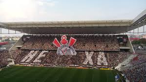

A Arena Corinthians, também conhecida como Itaquerão, é um estádio localizado em Itaquera, São Paulo. Inaugurado em 2014, ele foi uma das sedes da Copa do Mundo FIFA daquele ano. O estádio tem capacidade para aproximadamente 49 mil espectadores e é a casa do Sport Club Corinthians Paulista.
A arena é conhecida por sua arquitetura moderna e por ter uma cobertura que se destaca. Além de jogos de futebol, o espaço também é utilizado para shows e outros eventos. O estádio representa um marco importante na infraestrutura esportiva brasileira e teve um impacto significativo na revitalização da região de Itaquera.
